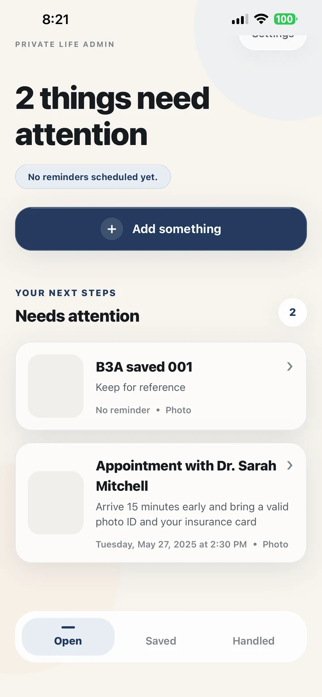
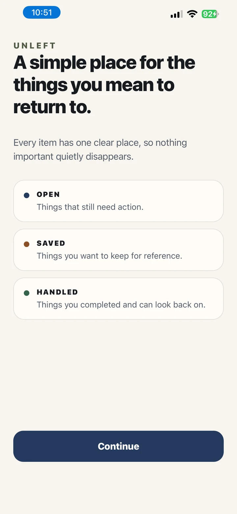

Needs a next step.
Actionable items stay visible, with an optional reminder and their original source attached.
Unleft turns screenshots, photos, papers, homework, bills, appointments, returns, and voice thoughts into clear action cards—so the source, the next step, and the outcome finally stay together.

Your camera roll is full of useful evidence: homework, appointment cards, receipts, return labels, school notices, forms, bills, messages, and ideas.
Notes can store them. Reminders can notify you. Unleft connects the saved source to the action—and keeps it visible until you are done.
Unleft gives every saved thing one clear destination.
Actionable items stay visible, with an optional reminder and their original source attached.
Keep a reference quietly. Move it to Open later when it becomes something you need to act on.
Finish the action and keep a simple history you can look back on.
Choose a screenshot or photo, take a picture, record a thought, or start manually.
On-device text recognition can suggest details from selected images. You approve and edit every card.
Keep action separate from reference so your list stays meaningful.
Add timing to important actions without turning every saved thing into an alarm.
Close the loop and clear the mental space it was taking.

Unleft is for the sources that already exist—not another blank system you have to maintain.
Photograph a worksheet, save an assignment screenshot, add the next action, and keep the source attached.
Turn the paper on the counter into something visible before it quietly disappears.
Keep the evidence with the action instead of rebuilding context when you return later.
Capture the thing while it is in front of you, then decide when—or whether—it needs action.
No hunting through Photos to remember what the reminder meant.
Saved items stay quiet. Open items stay actionable.
Handled gives you closure instead of an archive of unfinished tasks.
Local-first use, optional account, explicit backup consent, and no advertising profiles.
Unleft works locally without an account. Optional secure backup is enabled only after you choose it. We do not sell personal data, build advertising profiles, or use your saved content for tracking.
Unleft does one job deliberately: turn saved sources into handled outcomes.
No. Traditional task apps begin with a task. Unleft often begins with the real source—a screenshot, paper, photo, or voice thought—and helps you decide whether it needs action, reference, a reminder, or closure.
Yes. Students can capture homework sheets, assignment screenshots, class notes, permission forms, and deadlines while keeping the original source attached to the card.
No. You choose the specific photo, screenshot, camera capture, shared image, or voice note used for a card. Nothing becomes a card without your review and approval.
No. The core app is local-first. An account is optional and is used for features such as private backup and recovery.
Not currently. Optional backup is authenticated and access-controlled, but we do not claim end-to-end encryption. The local-first mode remains available without enabling cloud backup.
Unleft is preparing for a private family TestFlight beta, followed by a broader App Store launch after reliability, security, accessibility, and performance gates are complete.
Join the early-access list for the Unleft family beta and App Store launch.
No spam. No advertising profile. Just meaningful launch updates.